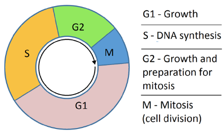
3 Strategies for Virus Replication and Transcription
The way a virus’s genetic material is arranged greatly influences how it multiplies. After the virus sheds its outer layer, a crucial step called uncoating, it needs to make copies of itself and create new genetic material packs.
Various viruses have developed unique methods for achieving this task. These strategies hinge on both the virus’s structure and the type of genetic material it carries. Importantly, the steps of copying the genetic material and assembling the virus are closely connected in this process.
3.1 Genome Structure in Viruses
Virus genome structure can differ in several ways, including the type of genetic material it’s made of, which might be DNA or RNA, distinct from the host cell. Moreover, it can have single or double strands, and its shape can be linear or circular. The way the genetic material reads can also be single-stranded, double-stranded, or a mix of both (i.e., ambisense polarity). In terms of numbers, there are more double-stranded DNA viruses compared to single-stranded DNA viruses, while there are more single-stranded RNA viruses than double-stranded RNA viruses. Additionally, virus genomes can be either single segments or divided into multiple segments.
Where the genome replication takes place can vary as well, with some happening in the cell nucleus and others in the cytoplasm. Most DNA viruses replicate their genome in the cell nucleus, whereas most RNA viruses do so in the cytoplasm. The structure of the genome has an impact on how the virus itself is structured. For instance, in certain viruses, an enzyme called polymerase needs to be packed together with the virus’s genetic material.
When it comes to DNA viruses, their genomes can differ in size. There are small ones, like parvovirus, with genomes of up to 9,000 bases, intermediate-sized ones around 35,000 bases, such as Adenoviruses, and larger ones ranging from 130,000 to 350,000 bases, like the Herpes virus. The larger DNA viruses even have the capacity to encode enzymes involved in DNA synthesis (polymerases) and factors that control transcription processes.
3.1.1 DNA Viruses
DNA viruses have different sizes for their genetic information. Some have small genomes, like the parvovirus, which can be up to 9,000 bases long. Then there are those with intermediate-sized genomes, like Adenoviruses, which are around 35,000 bases in length. On the larger end of the spectrum, there are viruses like the Herpes virus, which have genomes ranging from 130,000 to 350,000 bases. The interesting thing about these larger viruses is that they’re capable of carrying extra genetic instructions for important tasks like producing polymerase enzymes and factors that help regulate the process of transcription.
3.1.1.1 Regulating Gene Expression
The way DNA viruses control the information in their genes is quite intriguing. They manage their gene expression in a couple of distinctive phases. One of these phases is called early gene expression, and it involves a group of genes that are not related to the structure of the virus but are crucial for tasks like copying the viral DNA and changing the cell’s environment to favor the virus. Then there’s “late gene expression,” which handles genes responsible for constructing the virus’s structural components.
DNA viruses also have this switch between early and late gene expression. In the early phase, the genes responsible for kick-starting important reactions tend to be active, even though their expression might not be very intense. This early stage focuses on producing the essential building blocks. But when it comes to the late phase, the genes that create the structural parts of the virus, like its outer shell, become more active. This is because a lot more of these structural components are required.
Interestingly, certain viruses, like the Herpes virus, take a middle ground. They have genes that work in between the early and late stages. These genes play a role in controlling the expression of late genes, acting like traffic directors for the production of structural components.
This whole process is like a cascade of gene expression, where different genes are turned on and off at different times to ensure the virus can both replicate and assemble its components effectively.
3.1.1.1.1 Further Notes
Genes have a bit of a helper in their instructions, sort of like a bonus sequence called enhancer sequences. These enhancers make it easier for certain special tools, called factors, to stick to the gene’s instructions and help them work better.
When a virus wants to create certain things at a later stage, it needs the help of things it made early on, like a team effort. These early things and some tools from the cell work together to make the later things happen.
Imagine a virus being a bit of a sneaky character – it can mess with the cell’s work by speeding up the breakdown of the cell’s messages. This makes more room for its own messages, kind of like it’s turning up the volume on its own plans.
Virus instructions can be read in different places. Most DNA viruses, which are like tiny invaders, use the cell’s own reading machinery found in the cell’s nucleus. But some viruses are a bit different; they hang out and multiply in the cell’s playground (cytoplasm). These viruses bring their own special tools, like little helpers they made themselves, to read their instructions.
3.1.1.2 How do DNA Viruses Replicate?
A lot of DNA viruses make use of a special tool called the host cell DNA polymerase to copy their own genetic material. This is interesting because the host cell usually copies its DNA during a specific phase called the S phase.
DNA Viruses use three main ways to replicate:
Waiting for the Cell’s S Phase
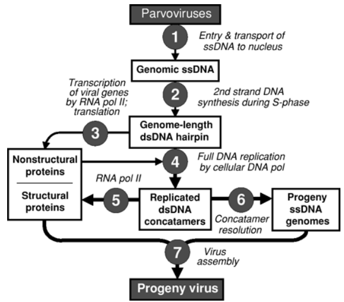
Waiting for the S Phase to Replicate Imagine DNA viruses like parvovirus as patient waiters. They’re polite viruses that know they need something from the cell to help them replicate. So, they patiently wait for the cell to enter a special phase called the “S phase,” which is like a busy time for the cell when it’s copying its own DNA. During this time, the cell has a special worker called DNA polymerase who’s really good at copying DNA.
Now, when the cell enters this S phase and starts copying its DNA, the parvovirus sees its chance. It steps up and says, “Hey, can you help me copy my DNA too?” Since the cell’s DNA polymerase is already busy copying the cell’s own DNA, it doesn’t mind helping out the virus at the same time. This way, the virus gets its DNA copied when the cell’s DNA is being copied, making things easier for both the virus and the cell.
Expressing Early Genes
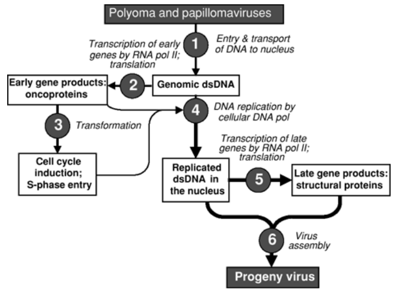
Expressing Early Genes to Cause Cells to Enter S Phase DNA viruses can sometimes use a sneaky trick to copy themselves. They have some special genes called “early genes,” which can act like switches that tell the cell to start dividing. This phase when the cell starts dividing is called the S phase.
By turning on these early genes, the virus kind of tricks the cell into thinking it’s time to divide. This is useful for the virus because during the cell’s S phase, it’s copying its own DNA, and the virus can use the cell’s copying machinery to make copies of itself too.
So, viruses like papillomavirus and adenovirus use this trick to make sure they get copied when the cell divides.
Encoding DNA Replication Enzymes
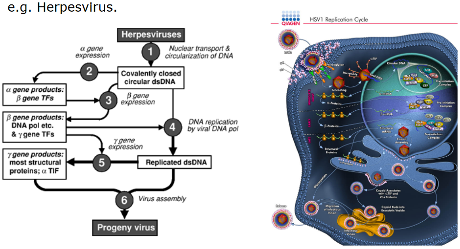
DNA Replication Enzymes Imagine DNA viruses as tiny machines that need to make copies of themselves. Some of these viruses have big instruction manuals (genomes) that are a bit complex. To help with the copying process, these viruses come with their own special tools called DNA replication enzymes.
These enzymes, like DNA polymerase and Thymidine kinase, are like super-fast copiers. They read the instructions in the virus’s manual and make exact copies really quickly. This way, the virus can make sure it has plenty of copies to spread around and infect more cells.
Reverse Transcription
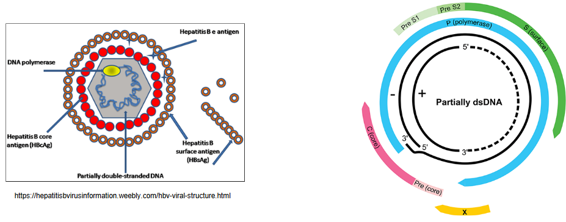
Structure of the Hepatitis B Virus Imagine the Hepatitis B virus having a unique mechanism, like a special method, for copying its instructions. Instead of having a regular circular DNA, its genetic material is mostly double-stranded and circular, but it’s not fully connected. This type of DNA is called relaxed circular DNA, or rcDNA for short.
This rcDNA has two parts: one is the minus-sense DNA strand, which is like the main part of the virus’s instructions. It’s connected to a special protein called the P protein at one end. The other part is the plus-sense DNA strand, which is shorter than the main part. It’s like a shortened version of the instructions. At one end of this shorter strand, there’s something called an RNA primer attached.
So, in simple terms, when the Hepatitis B virus wants to make copies of itself, it uses this special rcDNA method. It has one long piece of instructions (minus-sense DNA) connected to a protein, and another shorter piece (plus-sense DNA) with a tiny starter tag (RNA primer) attached. This unique way of copying its genes helps the virus spread and cause infections.
In the case of the Hepatitis B virus, the following steps occur:
- rcDNA goes into the cell’s nucleus and turns into a closed circle with the help of the cell’s own tools.
- The circle of DNA then gets turned into a type of “note” called subgenomic RNA by another tool in the cell.
- This special “note” helps make important parts of the virus, like its protective shell.
- There’s a special “note” in there called pregenomic RNA (i.e., pgRNA), which has all the virus’s instructions.
- The pgRNA gets wrapped up with a protein coat called capsid and another tool from the virus.
- A part of the pgRNA gets turned around, almost like a mirror image, to create a different kind of DNA.
- While doing this, the tool from the virus breaks down some parts of the pgRNA to help with the process.
- The tool uses a tiny piece of the pgRNA as a starting point to create a new piece of DNA that’s important for the virus’s plan.
3.1.2 RNA Viruses
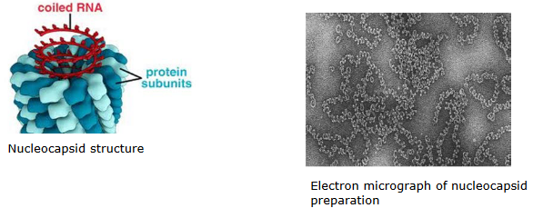
Viruses are like little code carriers, and some have instructions made of a special material called RNA. Unlike our own cells, which usually use DNA, these viruses are unique with their RNA instructions. This means that the cell’s copying tools, called polymerases, can’t directly copy these RNA instructions.
When these RNA viruses want to make more of themselves, they have their own tricks. Some use something called an RNA-dependent RNA polymerase (RDRP) to copy their RNA instructions. It’s like a super-fast copier that can work with RNA. In some cases, like with HIV-1, the virus even has a special tool called RNA-dependent DNA polymerase that helps convert the RNA instructions into DNA.
These RNA viruses can have two types of polarity, which is like the direction in which they read their instructions. They can read their instructions in a positive direction (+ve polarity) or in a negative direction (-ve polarity).
Now, here’s something interesting about -ve stranded viruses. Their RNA instructions are wrapped up in a special package called a nucleocapsid. It’s like their instructions are tucked away in a protective case, keeping them safe while the virus works on copying and spreading.
3.1.2.1 Replication Sites
When RNA viruses want to make more of themselves, most of them do it right in the cell’s playground, called the cytoplasm. But there are a few exceptions, like the influenza virus and HIV-1, which prefer a different spot.
Where the virus chooses to replicate, whether in the cytoplasm or somewhere else, actually matters a lot. Think of it like this: certain tasks are easier in certain places. For example, just like how we might have a special room for studying, cells have different rooms for different jobs. The place where a virus copies itself can affect how it does it. For instance, in the cell’s nucleus, a process called gene splicing happens. It’s like putting together different parts of instructions in a certain way. Influenza virus uses this process.
Now, here’s something cool. Some viruses that usually work in the cell’s playground, the cytoplasm, have developed their own special way of doing things. They’ve found a trick to create gene products that look like they’ve been spliced, even though they didn’t use the cell’s usual room for that. One example of this is RSV.
So, where a virus chooses to make more of itself affects how it does it, and some viruses even have clever strategies to get their work done in their favorite spots.
3.1.2.2 Replication Stratagies
3.1.2.2.1 Positive Stranded RNA Viruses
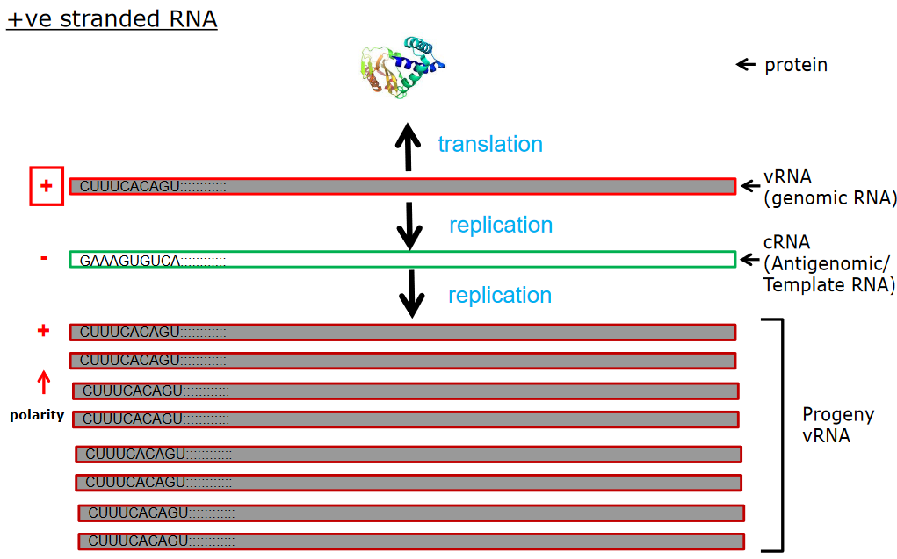
Positive-stranded RNA viruses have a nifty way of getting things done. They use their instructions directly to make stuff. It’s like reading a recipe and instantly cooking up a dish.
Just like how a recipe can be shared and someone else can make the same dish, these viruses can spread by sharing their “recipe” too. If you take the genetic instructions from these viruses and put them in a new cell, it can start making more viruses just by reading those instructions.
The main set of instructions in these viruses is a special kind of RNA, and this RNA gets turned into a whole bunch of different parts that the virus needs, both the important structural pieces and the things that help it copy itself.
So, in simple terms, these positive-stranded RNA viruses have a unique method where their instructions are like instant blueprints for making all the tools and parts they need. And these instructions can even be shared to make new viruses.
3.1.2.2.1.1 Further Notes
Some viruses, like dengue, have a straightforward way of doing things. They don’t bother with making special notes, and instead, they put all their important instructions in one place. It’s like having a single recipe that includes everything they need to make.
But then there are other viruses, such as norovirus, that work a bit differently. They’re like chefs who have a master plan. First, they create a base mixture that will later help them make important tools (proteins). This special mixture is a bit like a dough that’s used for various things.
Once this mixture is ready, another tool in the virus starts working like a chef’s hands. It takes parts of the mixture and shapes them into different types of tools, just like a baker making different types of cookies from the same dough.
3.1.2.2.2 Negative Stranded RNA Viruses
Some viruses, known as negative-stranded RNA viruses, have a unique trait. The genetic information they carry isn’t directly able to start an infection. It’s like having a puzzle piece that doesn’t fit until you add something extra.
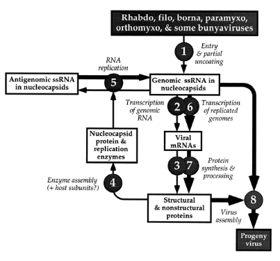
These viruses, however, come prepared. When they enter a cell, they bring along a special helper called a polymerase. This helper is like a construction worker who carries the tools needed to build something.
For these viruses, the first step to making more copies of themselves involves making a copy of their genetic material, but in the opposite direction. It’s like making a mirror image of a picture. This new copy then becomes the template to create more of the original genetic material.
This newly created copy now acts as a guidebook. It’s used to produce special messages called mRNA, which tell the cell how to build parts of the virus.
So, in a nutshell, these negative-stranded RNA viruses can’t start an infection right away with their genetic material. They bring a helper along, copy their genetic info in a special way, and use that copy to create important messages to build their virus parts.
3.1.2.3 Ambisense RNA Viruses
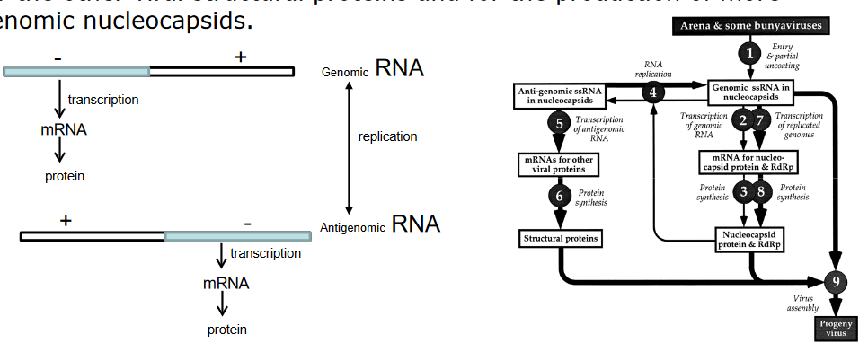
Imagine some viruses are like two-sided books. One side has a positive story, and the other side has a negative story. These viruses, called ambisense RNA viruses, are a bit like that.
In these viruses, the genetic material is set up in a special way. It’s like having a book where one end has a sad story (negative) and the other end has a happy story (positive).
When these viruses want to do their thing, they don’t just read the stories. They take the negative side and use it to make a messenger, like a note with important instructions. This note helps make a part of the virus.
But then, they also use the positive side to make something else. This time, it’s like they’re using it to make a special kind of worker. This worker helps create a copy of the negative side, kind of like making more copies of the sad story.
These new copies are like templates, and they’re used to make more workers and more important notes. So, these ambisense viruses do things in a special way, using both sides of their “book” to create different parts of themselves.
3.1.2.4 Double-Stranded RNA Viruses
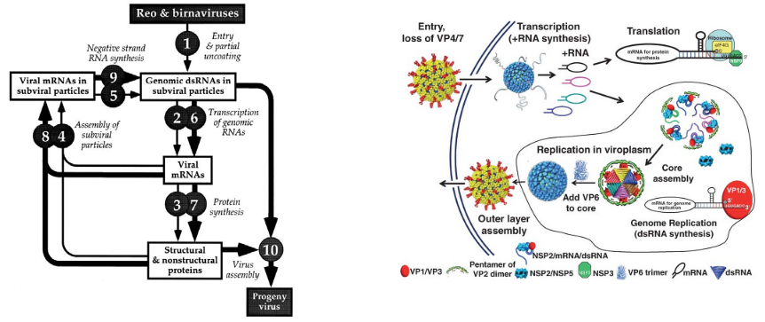
Think of some viruses like a book with two sides. One side is the “main story” (genomic RNA), but it’s locked away in a special case that’s not infectious by itself.
When these viruses want to do their thing, they open the case and make copies of one side of the story (making +ve single stranded RNA). These copies are like summarized versions of the main story.
Then, these copies are turned into workers (proteins) that join together and form a team (subviral particles). Imagine each worker has a special job, and when they work together, they create something new.
Interestingly, these workers also play a role in making new cases. They include the summarized copies (i.e., ssRNA) inside these new cases. These cases, in turn, help create more of the main story (genomic RNA) by using the summarized versions as templates.
So, these double-stranded RNA viruses work like bookkeepers, using copies of one side of the story to create teams and new cases that eventually help make more complete stories.
3.1.3 Quasispecies
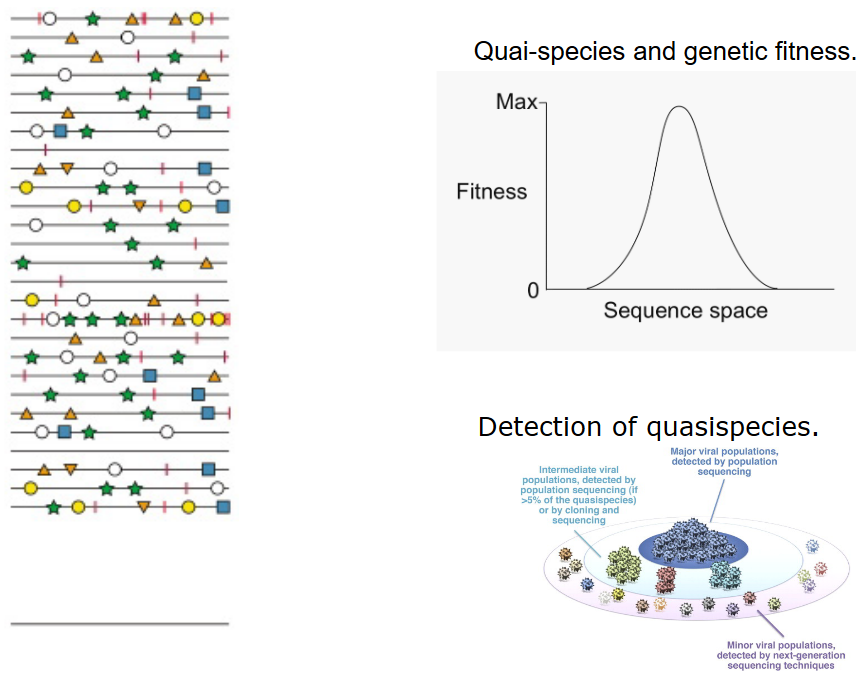
The way viruses copy their instructions isn’t always perfect. Some viruses, like those with RNA instructions, don’t have a good proofreading system in place, except for some like CoV. This means they sometimes make mistakes when copying.
These copying mistakes make these viruses a bit like a big family with lots of cousins. They have a bunch of similar sequences, but they’re not exactly the same. This is called a quasispecies, where a virus family has different related members in one big group.
Imagine this: when these viruses copy themselves, they might make around 1 mistake in every 10,000 letters. That’s like writing a really long story and making a couple of typos.
The number of these viruses in a group can be huge, like having 100 million influenza virus particles in a tiny drop of liquid.
Because of these mistakes and the large number of viruses, you end up with lots of closely related but slightly different viruses in the family. This mix of similar but not identical viruses is what we call a quasispecies.
Think of it like this: in a big group of friends, everyone is different in their own way, but they still belong to the same group. These virus families have their own versions too, but they’re all part of the same viral family. Some versions might be better at certain things, like surviving in different environments or against drugs or antibodies.
3.1.4 Retroviruses
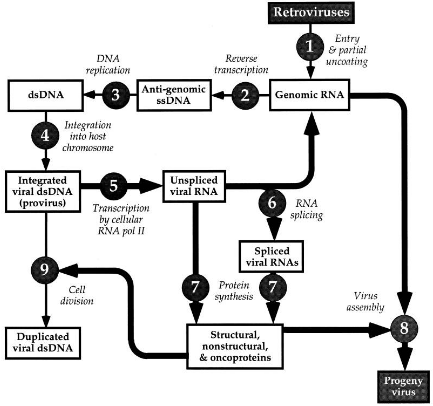
Imagine retroviruses like treasure hunters. They carry a special tool called reverse transcriptase (i.e., RT) that helps them convert their single-stranded RNA into double-stranded DNA. It’s like turning a one-sided note into a two-sided page.
When these retroviruses enter a cell, they bring this tool with them. It’s kind of like they have a helper in their backpack.
Then, this double-stranded DNA finds a cozy spot to settle down in the cell’s own bookshelf, which is like the host genome. It’s like placing a piece of paper into a big book.
This settled DNA is called a provirus. Think of it as a bookmark that’s stuck in the book forever.
The cell’s own tools, like its “RNA polymerase,” read this bookmark and create something new based on the instructions. It’s like the cell taking inspiration from the bookmark and writing a new story.
3.2 Gene Expression Strategies
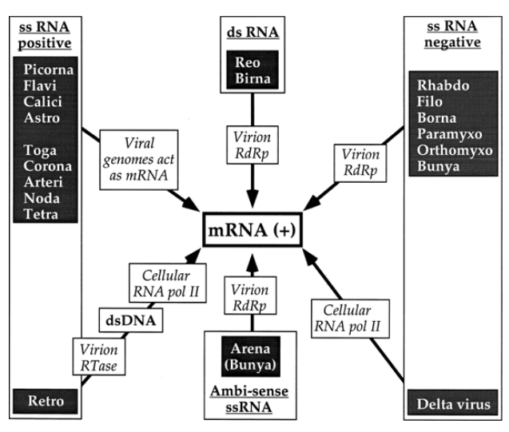
Positive-strand viruses, think of them as the “happy” viruses, are really good at using the cell’s tools for making things. It’s like they easily understand the cell’s machines for reading instructions. Their instructions are built to fit these machines, like they have a special key that works perfectly. Imagine it’s like putting together a puzzle, where all the pieces match.
For negative-strand viruses, these are a bit different. They’re like the “mysterious” viruses. They don’t focus on using the cell’s tools to make stuff. Instead, they have their own tools, like a special writer, to create new things. So, their instructions are like their own secret code, and they don’t necessarily fit the cell’s machines like the positive-strand viruses do.
3.2.1 Baltimore Virus Classification
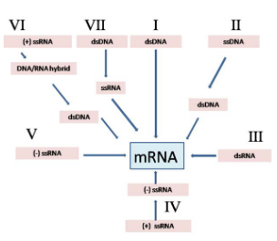
The system has seven groups:
Double-stranded DNA viruses
They’re like masters of making copies of themselves, and they include viruses like poxviruses.
Single-stranded DNA viruses
These are like “positive” thinkers. They use their own instructions to create things, like parvoviruses do.
Double-stranded RNA viruses
They have a different way of copying themselves, like reoviruses.
Positive single-stranded RNA viruses
These are like the “happy storytellers.” They read their instructions directly and make lots of things, just like picornaviruses do.
Negative single-stranded RNA viruses
These viruses have their own mysterious code. They don’t match the cell’s instructions exactly, and they include viruses like orthomyxoviruses.
RNA-RT viruses
They’re kind of like the time travelers. They use their RNA instructions to create DNA temporarily, and this DNA helps them make more copies of themselves. Retroviruses, like HIV-1, belong to this group.
DNA-RT viruses
These are like the “retro” writers. They use their DNA to make a special type of DNA with a twist, and hepadnaviruses are an example.
3.3 Replicative Intermediates (i.e., RI)
RNA, which is like the cell’s instruction manual, comes in two types: one-sided (single stranded) and two-sided (double stranded). Imagine it’s like having a single paper or a book with two pages. When viruses with single-sided RNA copies themselves, they make something called RI, which is like copying the pages of a book. This results in a double-sided RNA, which is a signal for the cell’s defense system, like a guard alert.
To avoid causing too much trouble for the cell, RNA viruses need to control how much they make. Imagine it’s like not making too much noise in someone else’s house.
When positive-strand viruses copy their RNA, they can create both the tools they need (proteins) and new instruction manuals (virus genomes). This means they don’t make too many opposite-sided copies (negative strands), only a small amount.
For negative-strand viruses, it’s a bit different. They need lots of both sides of their instructions to function well, like having both pages of a book to read. These instructions are always wrapped up with a protective cover, so the two sides don’t stick together and cause problems.
3.4 Protecting RNA from Degradation
RNA, which is like the cell’s instruction paper, needs to be kept safe from getting damaged.
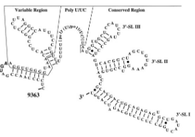
For positive-strand RNA viruses, it’s like having a regular piece of paper. They need to protect the ends of their instruction paper from getting torn and keep the paper folded properly so it doesn’t get messed up.
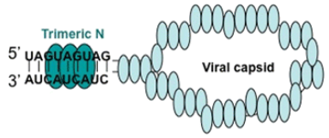
For negative-strand RNA viruses, it’s a bit different. Instead of folding, they use a smart trick. They have special matching parts at the ends of their paper, which help hold it together like a handle. This keeps the paper safe and also helps make more copies.
3.6 Host Factors
Scientists are still figuring out the exact ways our body’s proteins influence virus growth. Imagine proteins as tiny helpers. Some proteins interact with the virus’s “building crew,” like how certain proteins chat with the workers at a construction site. For instance, there’s a protein called HSP70 that talks to viruses like measles and RSV, while HSP90 connects with the flu virus. Also, just like how a structure needs a strong foundation, viruses like RSV need the cell’s framework called cytoskeleton to work well. It’s like using steel rods to hold up a building.
Some viruses use the cell’s outer layer to help them function. Think of it as a toolbox attached to a belt. The viruses might carry their tools in these special pockets of the cell’s outer layer, which are called lipid rafts. These are like secret compartments that make the viruses’ work easier.